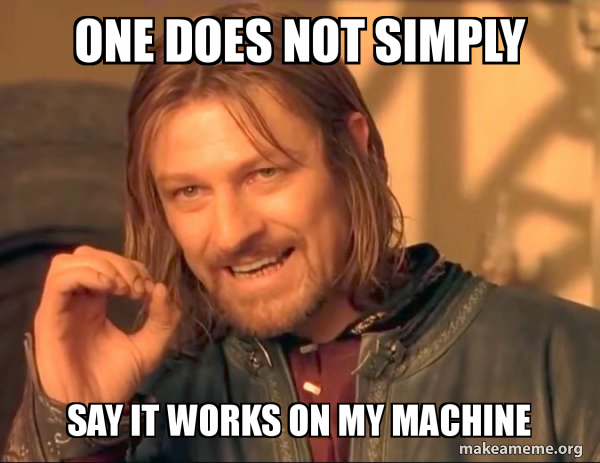

4,222 Introduction to Programming
Lecture 1: Introduction
Welcome to Introduction to Programming!
The reality of economics research and work
Whether you’re working with data or with economic models, …
- You will write code and documents on your own machine.
- You will collaborate with colleagues, for your thesis, research projects, and in industry.
- You will share, publish and reuse your code.
… and …
- Someone else will need to run your code, understand it, and build on it.
This course is about programming
Learning to program has become comparatively easy
- Learn a programming language like R or Python,
- Write code that works on your machine,
- Solve problems with models or data
… are now the A-B-C of an economist’s toolkit.
… and programming with reproducibility
Learning to program in a way that is reproducible, reusable and collaborative is harder
- Design and execute projects in a systematic and reproducible way.
- Write code that is reusable, maintainable and easy to share.
- Apply collaborative code development practices.

Skills you’ll develop in this course
- Write modular code, document functions, implement error handling.
- Collaborate using Git and version control, manage shared code.
- Structure data in relational databases and query with SQL for systematic data workflows.
- Produce code that works not just on your machine, but in settings that reflect real work in research and industry.
Let’s get to work!
- Learn essential programming practices in Python.
- Build tools using object oriented programming.
- Learn git and github.
- Learn SQL and relational databases.
At the end of this course, you will be able to produce structured and impactful work as an economist.
This course is introductory, and it is not…
Introductory yes ✅, but not in the traditional sense of the term ❌.
- As said, learning a new programming language (Python) has become comparatively easier.
- We will cover the basics of Python, but always with the goal of learning to program in a way that is reproducible, reusable and collaborative.
- All of you know R because of Data Handling, many of you did DSF, you are learning Econometrics this semester: an introduction to programming is beyond the point.
- We want you to develop a mindset!
Warning on the course
- This is the first time we give this course.
- The materials are new, the syllabus is new.
- We will be learning and improving the course together with you.
About us
About us
| Aurélien Sallin |
Franziska Bender |
Lea Tschan |
Valentina Sontheim |
Andrija Lukovic |
Johannes Cordier |
Course structure and Syllabus
Course concept: lectures
- 11 Lectures (Friday morning)
- Background/Concepts
- Some classes will be focused on programming together, others will be more theoretical.
Course concept: exercises
- 8 weekly exercise sessions
- Hands-on exercises/tutorials with exercise sheets handed out every other week
- Two groups, 4 teaching assistants. One assistant leads the session, the other one assists you personally.
- Starts at 12:30 without break until 14:00.
- Q&A sessions for the group project: 08.05.2026 and 15.05.2026.
Course structure: part 1
Set up your environment, learn to work together with version control and git.
| Lecture | Topic | Instructor | Date | Date Exercise |
|---|---|---|---|---|
| Lecture 1 | The big picture. Set up your environment. | Aurélien & Franziska | 20.02.2026 | 20.02.2026 |
| Lecture 2 | Working together: intro to version control and git | Aurélien | 27.02.2026 | 27.02.2026 |
| Lecture 3 | Working together: more about version control and git | Aurélien | 06.03.2026 | 06.03.2026 |
Course structure: part 2
Learn Python from basics to classes, error handling, documentation, and debugging.
| Lecture | Topic | Instructor | Date | Date Exercise |
|---|---|---|---|---|
| Lecture 4 | Intro to python | Franziska | 13.03.2026 | 13.03.2026 |
| Lecture 5 | Python for Data: Pandas and Matplotlib | Franziska | 20.03.2026 | 20.03.2026 |
| Lecture 6 | Python for Data: Pandas and Matplotlib | Franziska | 27.03.2026 | 27.03.2026 |
| Break | ||||
| Lecture 7 | Python: Introduction to Classes (OOP) | Franziska | 17.04.2026 | 17.04.2026 |
| Publication of group project, deadline for group formation | 20.04.2026 | |||
| Lecture 8 | Error Handling, Documentation, Debugging | Franziska | 24.04.2026 | 24.04.2026 |
Course structure: part 3
Learn about databases, SQL, and DevOps practices.
| Lecture | Topic | Instructor | Date | Date Exercise |
|---|---|---|---|---|
| Lecture 9 | Short overview of databases and relational database management systems | Aurélien | 01.05.2026 | 01.05.2026 |
| Lecture 10 | Devops, Continuous Integration | Aurélien | 08.05.2026 | Q&A Session, 08.05.2026 |
| Lecture 11 | Conclusion, Q&A, Case Study | Aurélien & Franziska | 15.05.2026 | Q&A Session, 15.05.2026 |
| Submission Group Project | 20.05.2026, 23:59 | |||
| Lecture 12 | Exam | Aurélien & Franziska | 22.05.2026 | No Exercise session |
Examination
Exam information: group project
Goals
- Use real-world data in a project to practice and reinforce the concepts covered in the course.
Project timeline
- May 20th, 23:59: Submission.
- April 20th: Project.
- April 20TH: Deadline fro group formation. Group of five people.
Exam
- May 22nd, 10:15: Exam.
- Questions about project and course. Multiple choice for lectures, and essay questions to the group project.
- You don’t need to write code, but you need to understand code and interpret it.
The tools
Core course resources
- Everything on Canvas, then on github
- Only one Canvas page
- Questions only through Canvas forum!
Contact for personal questions only!
Aurélien : until Break
Franziska: after break.
Do not contact the assistants.